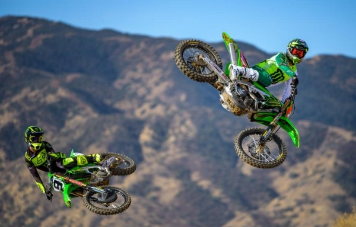
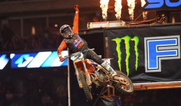
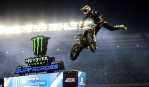
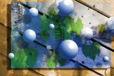

David Weibel



This weekend I am taking my family to Monster Energy Supercross at US Bank Stadium. My two boys are super
excited to go watch the professionals battle it out on their dirt bikes. Right now Eli Tomac is leading the series
in
points with Jason Anderson close behind in second. This will be the first time that my youngest child has ever been
to
a big stadium and I am extremely excited to watch his reactions to the new environment. Lets face it I am a grown
adult and I still smile from ear to ear during the opening ceremonies when the flames are flying so high that
you can feel the heat on your face as the big name riders enter the stadium reving up their engines and riding
wheelies across the stadium.
